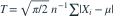
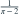
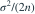
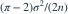

正态总体均值已知，估计标准差的无偏统计量

。以“C-R 下界除以实际方差”定义效率， 的效率为？- A

- B
- C
- D1
我已思考，展开答案与解析
正确答案：A
- 样本信息量为 ，C-R 下界为

。 - 实际方差为

，故效率为 。
易错提醒此处明确了效率的分子、分母，避免把比值写反。
JYSG · 432精选 · 册内复旦大学432·2019年·六(2)；效率拆解；PDF第35页（印刷页33）
原题知识点延伸